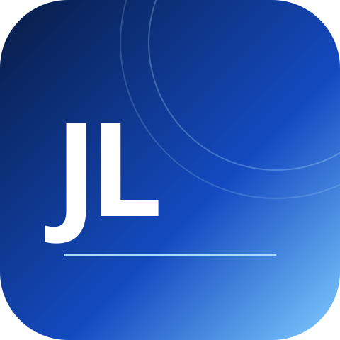

DEVELOPMENT · LEARNING · MUSIC
안녕하세요.
개발자로 성장하고 있는 이준성입니다.
이준성 | Junseong Lee
새로운 기술을 배우고 직접 구현하며, 개발 역량을 쌓아가고 있습니다.
01 / ABOUT
배움의 과정,
그리고 나.

JL · 프로필 그래픽을 표시할 수 없습니다.
광운대학교 정보융합학부에 재학 중이며, 코디세이 AI 올인원 과정에서 다양한 과제를 수행하며 소프트웨어 개발을 공부하고 있습니다. 프로그래밍과 다양한 개발 기술에 관심을 가지고 있습니다. 개발 외에는 다양한 음악 활동을 즐기는 것이 취미입니다.
개발을 공부하고,
음악을 즐기는 일상.
02 / SKILLS & TOOLS
직접 다루며
익혀가는 도구들.
과제와 실습을 통해 쌓는 경험입니다.
숙련도 등급이나 실무 경력을 의미하지 않습니다.
Programming
Python
기초 프로그래밍 및 과제 구현
Version Control
Git
버전 관리 및 브랜치 실습(merge·충돌 해결 경험)
Repository Hosting
GitHub
저장소 생성 및 코드 관리
Development Environment
Docker
컨테이너 및 개발환경 구성 실습
이 웹사이트는 AI의 도움을 받아 구현하고 검증한 학습 결과물입니다. 기술 목록은 실제 실습 범위에 맞춰 기록했습니다.
03 / PROJECTS
코드로 남긴
학습의 기록.
Featured는 코디세이 과정에서 수행한 학습 과제입니다.
All Repositories에는 전체 공개 저장소가 표시됩니다.
JavaScript를 켜면 GitHub 공개 저장소를 불러옵니다.
Featured Projects
선택한 코디세이 과제 · 지정 순서연결 후 확인된 저장소만 표시합니다.
All Repositories
전체 공개 저장소 · 이름 오름차순04 / CONTACT
이야기를
남겨주세요.
아래 폼으로 문의를 남길 수 있습니다. 개인 이메일 주소는 공개하지 않습니다.
이메일과 전화번호는 공개하지 않습니다.
제출하면 이름·이메일·메시지가 문의 처리를 위해 Formspree와 수신자에게 전달됩니다. 민감한 정보는 입력하지 마세요.